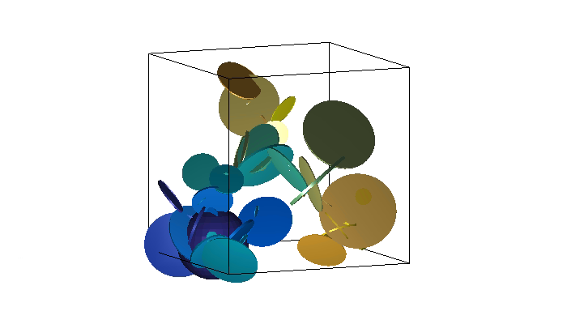
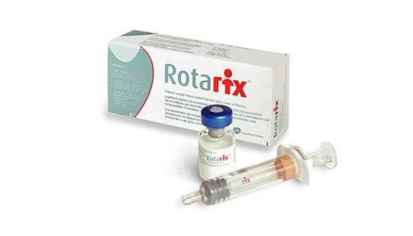
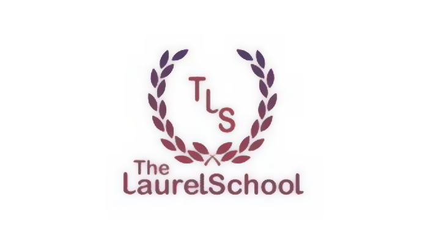
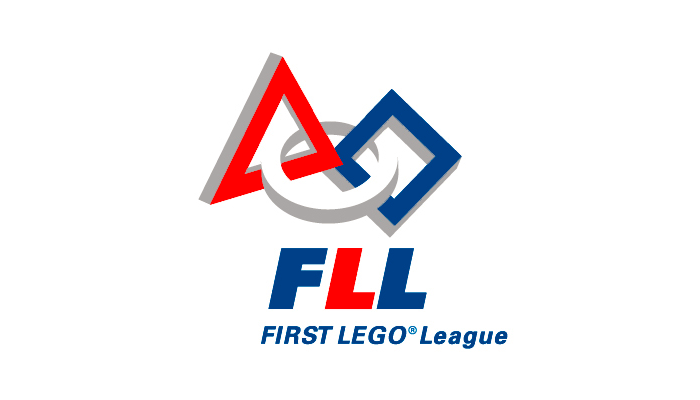

Research Experience
Click on an entry to view the relevant publication

Paths through Close-Packed Carbon Molecules
I was a research assistant to Professor Siu Ning Leung at the Lassonde School of Engineering. I had to program in C++ a computer simulation of carbon molecules dispersed in a polymer matrix, then trace the thermally conductive paths through molecules that are in contact. This is ongoing, so the results are not yet published.

Simulating Conductivity of Carbon Nanotubes
I was a research assistant under Professor Siu Ning Leung at the Lassonde School of Engineering. I had to program in C a computer simulation of conductivity of carbon nanotubes dispersed in a polymer matrix. The results were compared to those produced experimentally. This is ongoing, so the results are not yet published.

Vaccine Analgesia with Sucrose and Rotavirus Vaccine
I was a research assistant to Professor Anna Taddio, Dr. Dan Flanders, and Dr. Eitan Weinberg at Kindercare Pediatrics. It is known that sugar water, when orally administered before a vaccine, reduces the recipient's distress. The research is to find whether the sweetened, orally administered rotavirus vaccine does the same.
How to Address Needle Phobia in Children
I was a research assistant to Professor Anna Taddio and Jennifer Wells. Students at an independent school participated in focus group interviews, where they discussed how pain and distress during vaccination could be addressed.
Volunteer Experience

Summer Camp Counsellor at Laurel School
I volunteered as a counsellor for summer camp at The Laurel School. I supervised children aged 4-12 and organized activities.

Robotics Club Coach at Laurel School for First Lego League
I volunteered as a coach for the robotics club at The Laurel School. I supervised and taught children aged 9-14 for the First Lego League competition.
Canvassing for Royal Canadian Legion Fundraiser
When in the Royal Canadian Air Cadets, I participated in fundraising events for the Royal Canadian Legion by canvassing for donations.
Programming Experience
Click on an entry to view the Git repository
C++: Probability Distribution Library
This is a small library that contains classes for different discrete and continuous distribtions. It can generate random numbers to fit a distribution using a numerical approach and find the probability of values under a section of the curve.
Python: Image to G Code
This is a Python library that takes images of varying format, many raster types or .dxf vector as input, assumed to be binary black and white in colour, and outputs CNC-ready G Code that traces the outlines of the shapes, allowing it to be cut with a router.
Python: Primitive Sudoku Solver
This Python script was an exercise in implementing a few simple Sudoku solving techniques. More will likely be implemented in future, including a recursive guess-and-check algorithm when a dead end is reached. For now, it can do basic deduction.
Python: Synonym Program
I wrote a Python program that, after reading plaintext files of works of literature, can determine the synonym of a given word when presented with a set of options. Given the test file and text files present in the repository, it achieves 80% accuracy.
C: Edmonds-Karp Algorithm
This program is an implementation of the Edmonds-Karp Algorithm in C, which finds the maximum flow from a given start point to an end point through a flow network.
Java: Chemistry Equation Solver
In the 11th grade, I wrote a program that simplified the repetitive calculations of many of my homework problems. Where an equation has n values, the program receives n-1 values as input, and solves for the remaining value. It also performs unit conversion.